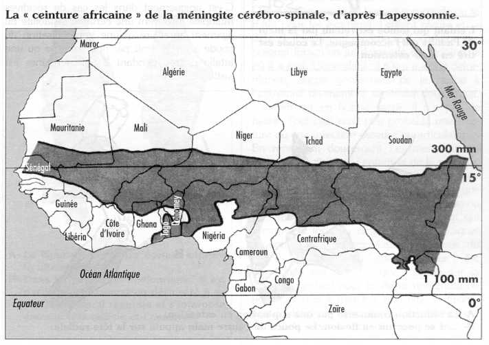
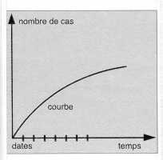
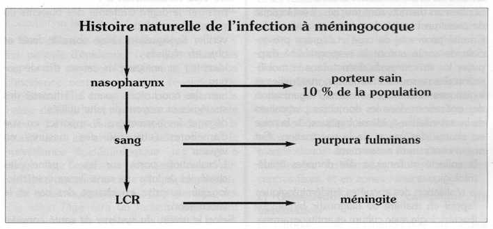

Détection et contrôle des épidémies de méningite à méningocoque (MCS)
I. Introduction
Classiquement appelée méningite cérébrospinale (MCS), la méningite à méningocoque est une maladie infectieuse et contagieuse. C'est une urgence médicale, une affection qui tue, si elle n'est pas traitée correctement et qui peut laisser des séquelles neurologiques graves. C'est la seule méningite bactérienne qui soit épidémique en Afrique où elle pose un permanent problème de santé publique. L'étendue et l'envergure des récentes épidémies ont démontré que celles-ci n'ont plus de frontières et que les pays africains sont mal préparés pour y faire face.
Les épidémies de méningite sont observées régulièrement, essentiellement en zone soudano-sahélienne, au niveau de la ceinture africaine de la méningite. Mais depuis 1988, on assiste à une véritable pandémie due à un sérotype particulier du groupe A (Clone 111- 1). Classiquement, les épidémies surviennent à intervalle régulier de 7 à 8 ans. On peut constater un raccourcissement de l'intervalle inter-épidémique (5 ans au Tchad, en 1988 et au Niger, en 1991).
Les épidémies de méningite commencent habituellement en saison sèche et s'achèvent avec la tombée des premières pluies. Ce caractère saisonnier n'est plus toujours respecté.
La Ceinture Africaine de la méningite ou Ceinture de Lapeyssonnie s'étend d'Est en Ouest de la mer Rouge à l'Atlantique, de l'Éthiopie au Sénégal.

A. Agent infectieux
La méningite à méningocoque est provoquée par une bactérie Gram négatif appelée Neisseria meningitidis. On lui connaît au moins 12 sérogroupes : A, B, C, D, X, Y, Z, W135, 29E, H, I, K, L. A l'intérieur de chaque sérogroupe, il existe des sérotypes, des sous-types et des clones. Près de 90 % des infections sont provoquées par les souches A, B, et C. Le sérogroupe A est la principale cause de méningite épidémique en Afrique. Quelques épidémies dues au sérogroupe C ont été observées en Afrique de l'Ouest (Nigéria, Burkina Faso, Mali).
Cette situation épidémiologique explique pourquoi les vaccins recommandés en Afrique sont les formes bivalentes (A et C).
B. Mode de transmission et portage
Le réservoir est l'homme. La bactérie vit sur les muqueuses du nez et de la gorge. Elle se propage de personne à personne par les sécrétions nasopharyngées et les gouttelettes de salive projetées par la toux. L'infection méningococcique est le plus souvent inapparente ou exprimée par une banale pharyngite. Dans la grande majorité des cas, le sujet s'immunise en fabriquant des anticorps protecteurs et devient porteur sain. Dans un petit nombre de cas, l'infection diffuse par voie sanguine et provoque une méningite ou une méningococcémie.
Dans les périodes inter-épidémiques, la prévalence des porteurs sains peut atteindre 25 % sans qu'il n'apparaisse de cas de méningite. En période épidémique, cette proportion peut atteindre 60 à 80%. La durée du portage est variable suivant les sérotypes, courte pour le méningocoque A, ne dépassant pas une dizaine de jours, elle peut atteindre des semaines, voire des mois pour les méningocoques B et C. La plupart des personnes porteuses de N. meningiditis n'ont aucun symptôme de la maladie. Les raisons pour lesquelles certains porteurs, contrairement à d'autres, développent la maladie ne sont pas encore bien comprises.
C. Population à risque
Les enfants à partir de 6 mois, l'adolescent et l'adulte jeune sont les sujets les plus touchés; 80 à 90 % des cas surviennent avant l'âge de 30 ans; la maladie devient rare après cet âge.
D. Données cliniques
La méningite à méningocoque peut donner lieu à deux manifestations distinctes, le syndrome méningé et le purpura fulminans.
La forme habituelle est le syndrome méningé qui se traduit, chez l'adulte, par un début brutal avec une fièvre supérieure à 38,5°C associée à des céphalées violentes, des nausées, des vomissements et une photophobie. A l'examen, la flexion de la nuque est douloureuse et limitée, la flexion des membres inférieurs maintenus en extension sur le tronc entraîne une flexion invincible des jambes sur la cuisse.
Chez le nourrisson, le diagnostic peut être plus difficile : la raideur de la nuque peut manquer et être remplacé par une hypotonie avec agitation, geignements, hyperesthésie, quelques convulsions. On peut retrouver un bombement de la fontanelle, un plafonnement du regard, des diarrhées et/ou vomissements avec refus de toute alimentation. La fièvre peut être absente au début.
La forme foudroyante réalise le purpura fulminans, rencontré dans 1 0 % des cas. C'est la première urgence en infectiologie ! En une ou deux heures : fièvre élevée, malaise intense, myalgies, prostration signent la septicémie.
De petites taches purpuriques (ne s'effaçant pas à la vitro-pression) apparaissent et s'étendent rapidement.
Le LCR est normal à ce stade.
Si un traitement antibiotique immédiat n'est pas entrepris, la mort survient dans plus de 60 % des cas en quelques heures.
Il faut injecter, le plus tôt possible,50mg/Kg d'amoxicilline IV.
En dehors d'une épidémie, il vaut mieux faire une ponction lombaire (PL) de trop que passer à côté d'une méningite. Ainsi, dans le doute, ne pas hésiter à effectuer une ponction lombaire chez un adulte, a fortiori chez un enfant ou un nourrisson.
E. Données biologiques
Quand elle est possible, la ponction lombaire est essentielle pour confirmer le diagnostic de méningite (LCR trouble). Elle ne doit cependant pas retarder le traitement.
Si les moyens le permettent, la numération de cellules et le Gram sont requis, ainsi que le dosage des protéines. La culture se fait dans des laboratoires bien équipés. Des tests de diagnostic rapide (latex) sont disponibles sous forme de "kits" utilisables dans les conditions de terrain.
Il. Stratégies de lutte
Dans le contexte africain, le contrôle des épidémies de méningite devrait reposer sur l'application de mesures simples et efficaces, fondées sur la connaissance des réalités épidémiologiques et socio-économiques locales. Trois stratégies sont considérées comme essentielles :
- la surveillance épidémiologique
- la prise en charge des cas
- la vaccination
Les autres mesures traditionnellement utilisées dans le cadre de la prévention, tels que l'isolement et la chimioprophylaxie, ne sont pas recommandées.
1. Surveillance épidémiologique
L'efficacité des mesures de lutte dépend pour une large part de la rapidité avec laquelle elles seront prises. De ce fait, la mise en place d'un système de surveillance épidémiologique est l'une des actions prioritaires à entreprendre dans un programme de lutte contre la méningite à méningocoque.
La surveillance épidémiologique consiste en un recueil continu d'informations sur la morbidité et la mortalité. Son objectif principal sera la détection précoce d'une épidémie, en vue d'un déclenchement rapide des opérations et l'évaluation de l'efficacité des mesures de lutte. Plus concrètement, elle visera à :
- identifier régulièrement les cas et décès ;
- déterminer les tendances ;
- détecter les épidémies ;
- suivre l'évolution d'une épidémie
- évaluer l'application et les résultats des mesures de lutte.
La mise en place d'un système de surveillance repose sur les principes suivants :
- la définition de cas (voir encadré 1)
- l'enregistrement et la déclaration des cas
- la collecte et l'analyse des données ;
- l'interprétation des données en vue de la prise de décisions :
- donner l'alerte en cas de situation anormale,
- affirmer ou infirmer l'existence d'une épidémie,
- orienter la lutte contre l'épidémie.
Les modalités de la surveillance épidémiologique peuvent varier selon que l'on est en situation d'épidémie ou non.
Sera considéré, enregistré et déclaré comme cas de méningite :
|
A. Situation hors épidémie
a) Définition de cas
La définition des cas de méningite doit être simple, claire, pratique, fondée sur des données cliniques et/ou biologiques, selon les moyens disponibles. Il est important que la même définition soit retenue dans l'ensemble du pays et que celle-ci soit utilisée par l'ensemble des formations sanitaires, publiques et privées.
Tout cas suspect de méningite devrait fairel'objet d'une ponction lombaire. Dans les formations sanitaires où un diagnostic biologique est possible, le germe responsablede la méningite sera précisé.
b) Enregistrement et déclaration des cas
Tout cas de méningite doit être enregistré dans un cahier (registre) de consultation. Compte tenu de l'évolution actuelle des épidémies de méningite en Afrique, il est recommandé que la notification des cas se fasse de manière hebdomadaire. En l'absence de cas, on notifie : 0 cas.
c) Collecte et analyse des données
Il s'agira de :
- Compiler les cas semaine par semaine (à chaque début de la semaine suivante)
- Réaliser des tableaux et graphiques par tranches d'âge et par zones de responsabilité ;
- Comparer l'incidence observée au seuil d'alerte établi pour la zone.
Au niveau des formations sanitaires de base, tenir compte du nombre de cas hebdomadaire et de l'évolution de semaine en semaine.
Au niveau du district, calculer le taux d'attaque hebdomadaire, sur la base des données démographiques sur la population concernée, éventuellement en faisant une estimation.
nouveau cas / T
Taux d'attaque = --------------------------------
population de référence
T = période de temps (ici il s'agit d'une semaine).
d) Interprétation des données : prise de décisions
Alerte à l'épidémie
Une épidémie se définit par un nombre anormalement élevé de cas par rapport à l'incidence habituelle observée dans la zone à la même période de l'année. La déclaration d'une épidémie doit donc reposer sur la comparaison de données observées à des données attendues en temps normal au sein de la même population.
Le déclenchement de l'alerte se fera :
- au niveau des formations sanitaires de base (postes et centres de santé), au vu du triplement du nombre de cas par rapport à l'année précédente pendant 2 semaines consécutives ou du doublement des cas de semaine en semaine pendant 3 semaines consécutives ;
- au niveau du district, par le franchissement d'un taux d'attaque hebdomadaire de 15 cas pour 100 000 habitants pendant 2 semaines consécutives, calculé pour une population comprise entre 30 000 et 100 000 personnes.
La rumeur populaire peut constituer un élément d'alerte, quel que soit le niveau.
Confirmation de l'épidémie
La confirmation ou l'infirmation d'une épidémie se fera par une enquête lancée aussitôt après l'alerte. Cette enquête a pour objectif de :
- vérifier les informations sur les cas déclarés comme méningites ;
- établir le diagnostic au moyen d'une étude de nouveaux cas ;
- obtenir des échantillons de liquide céphalorachidien pour une confirmation du diagnostic en laboratoire (le matériel devra être amené par l'équipe) ;
- rechercher les cas de méningite survenus au sein de la communauté mais non référés vers les formations sanitaires ;
- recueillir les informations concernant les dates d'apparition, l'âge, le sexe, le lieu de résidence et l'issue (favorable ou décès) des cas.
L'enquête fera l'objet d'un rapport. C'est sur la base de ce rapport que la notification de la situation épidémique sera faite aux autorités locales, régionales et centrales, ainsi qu'à l'OMS.
Dans la ceinture classique de la méningite et quand on connaît la population concernée, l'alerte est basée sur un taux d'attaque hebdomadaire calculé sur une population de 30 000 à 100 000 personnes :
|
B. Situation d'épidémie
a) Définition de cas
Une fois l'épidémie confirmée, tout cas de maux de tête violents, associés à une fièvre élevée et à une raideur de la nuque, doit être considéré comme une méningite et traité comme telle.
b) Enregistrement et déclaration des cas
Il est impératif d'ouvrir un registre spécial de méningite. L'enregistrement des cas se fera de façon journalière et par zone géographique (inscrire les cas sur une carte). La déclaration doit être assurée par les moyens les plus rapides, au minimum de façon hebdomadaire.

c) Collecte et analyse des données
Les données seront organisées selon le temps, le lieu et les caractéristiques individuelles.
Selon le temps, les données seront répertoriées chronologiquement sur un graphique. Le tracé de la courbe épidémique permet d'affirmer l'existence de l'épidémie, de mesurer son importance et d'en suivre l'évolution.
Selon le lieu, la distribution géographique des cas permet d'identifier les zones à risque et de suivre l'extension géographique de la maladie.
Selon les caractéristiques individuelles (âge, sexe ... ), on calculera les taux d'attaque par classes d'âge et par sexe. Ces indicateurs sont essentiels pour déterminer les groupes de population les plus affectés.
L'analyse des données descriptives et de la courbe épidémique permet :
- d'identifier les groupes de la population particulièrement touchés par l'épidémie.
- de prendre des mesures visant à réduire la létalité, diminuer l'incidence de la maladie et stopper l'épidémie.
d) Interprétation des données
Les renseignement fournis par la surveillance épidémiologique serviront à :
- décider des méthodes de lutte à utiliser, notamment la stratégie vaccinale ;
- évaluer l'efficacité des mesures de lutte, et les adapter au besoin ;
- tenir informées les autorités politico-administratives et les populations ;
- assurer la rétro-information régulière à tous les niveaux du système de santé.
2. Prise en charge des cas
Dans un contexte d'épidémie notamment, l'objectif de la prise en charge est double : limiter le nombre de cas et diminuer la létalité.
A. Principes généraux
La prise en charge devra respecter les principes suivants :
- Le traitement doit être entrepris d'urgence.
- La déclaration est obligatoire et immédiate.
- L'admission au centre de soins le plus proche est nécessaire.
- L'isolement du malade est inutile.
- Le transfert dans un centre de santé éloigné est déconseillé.
- En l'absence de centre de santé proche, le regroupement des malades dans un même local est recommandé.
- La chimioprophylaxie de l'entourage et de la communauté est fortement déconseillée.
La prise en charge des cas sera adaptée aux conditions opérationnelles locales. On tiendra compte notamment des considérations d'efficacité, de coût du traitement, de facilité d'administration des produits, d'acceptabilité par les populations.
B. Traitement des cas
Le traitement antibiotique est essentiel. C'est le seul moyen pour réduire la létalité de la méningite et la survenue de séquelles neurologiques. On peut espérer une guérison dans plus de 90 % des cas, si le traitement est entrepris dans les 48 premières heures après le début des symptômes. Un traitement symptomatique peut être associé, si nécessaire.
a) Traitement antibiotique
Dans la liste des médicaments essentiels, trois antibiotiques sont actifs : le chloramphénicol, la pénicilline et l'ampicillline.
| Le traitement de référence est actuellement le chloramphénicol huileux en une injection intramusculaire unique suivie, si besoin, d'une deuxième injection après 24-48h. Si le chloramphénicol est le traitement de référence du fait de son efficacité et de son faible coût, on lui reproche d'être bactériostatique et non bactéricide. Les céphalosporines de 3ème génération (ceftriaxone, cefotaxime) administrées par voie IV agissent plus vite et diminuent la mortalité et le taux de séquelles. Les doses varient de 50 à 100 mg/kg/jour. Le traitement ne dure que 24 heures ! |
Dans un centre de santé
Les antibiotiques sont choisis en fonction des disponibilités locales. Le chloramphénicol huileux (Tifomycine®) est administré en une seule injection intramusculaire répartie dans les deux fesses. Ne jamais l'administrer en intraveineuse. Garder le malade en observation au moins 48 h après l'injection.
Si la situation ne s'améliore pas, si la fièvre ne baisse pas, faire une deuxième injection (même dose que la 1ère) et transférer éventuellement à l'hôpital le plus proche. Pour les formes graves, traiter avec le chloramphénicol huileux et évacuer immédiatement.
Si la forme huileuse n'est pas disponible, traiter le patient avec la forme aqueuse et commander du chloramphénicol huileux au niveau supérieur. Le chloramphénicol aqueux devra être administré en IM à raison de 3 injections par jour durant 5 jours minimum.
A l'hôpital
Commencer par le chloramphénicol huileux comme traitement de première intention (1 à 2 doses); à défaut, administrer le chloramphénicol aqueux. Pour les cas graves ou référés, utiliser l'ampicilline, la pénicilline G ou les céphalosporines de 3ème génération si disponibles.
b) Traitement symptomatique
Selon les cas, on peut donner des anticonvulsivants (diazépam), des antipyrétiques (paracétamol). En cas de déshydratation, la correction sera faite par voie orale ou, si celle-ci est impossible, par voie parentérale.
3. Vaccination de masse
La vaccination est actuellement considérée comme la principale mesure de lutte pour enrayer une épidémie. Elle apporte une protection individuelle, mais n'empêche pas le portage du germe, ni la transmission de la maladie.
A. Situation d'épidémie
La méningite à méningocoque étant une affection survenant de façon sporadique, un seuil est nécessaire pour déterminer si le nombre de cas observés justifie la mise en oeuvre d'un programme de vaccination. Pour les pays africains, le seuil retenu est le nombre de 15 nouveaux cas pour 100.000 habitants en une semaine.
a) Stratégies recommandées
Plusieurs alternatives seront considérées en fonction du contexte local.
La première option, la plus efficace, consiste à vacciner l'ensemble de la population des zones épidémiques en 10 jours. Elle suppose de disposer de suffisamment de ressources. Si les ressources sont limitées, les deux options suivantes peuvent être considérées dans la première phase de lutte contre l'épidémie : réduire les zones géographiques à vacciner suivant le niveau du taux d'attaque ou pratiquer une vaccination sélective des tranches d'âge les plus touchées. L'expérience a, cependant, montré que la mise en oeuvre de l'une ou l'autre de ces deux dernières options pose souvent des problèmes d'acceptabilité et de faisabilité sur le terrain.
b) Logistique
Il est conseillé :
- de procéder, dès les premiers signes d'alerte, et régulièrement ensuite, à l'évaluation des besoins en vaccins, en matériel et en personnel ;
- d'utiliser le vaccin anti-méningococcique bivalent A/C ;
- de vacciner avec la seringue monodose à usage unique stérile ;
- d'éviter, autant que possible, l'usage des injecteurs sans aiguille (pistolets injecteurs sous pression) ;
- d'incinérer les seringues et aiguilles après usage.
B. Situation hors épidémie
De nos jours, il n'est pas possible d'intégrer le vaccin polysaccharidique dans le programme élargi de vaccination (PEV), à cause de sa faible efficacité dans le groupe cible (nourrisson < 1 an).
La vaccination préventive de certains groupes particulièrement exposés (enfant > 2 ans, écoliers, militaires, pèlerins, et autres collectivités) peut être envisagée dans les zones à haut risque.
4. Mesures préventives inutiles et déconseillées
A. Isolement des malades
Le rôle des porteurs sains est plus important que celui des malades dans la transmission du germe. le portage pharyngé disparaît rapidement chez les malades traités. Pour toutes ces raisons, l'isolement des malades n'est pas nécessaire.
B. Mesures de police sanitaire
L'interdiction des rassemblements (baptême, funérailles), la fermeture des marchés, les barrages routiers, n'ont pas démontré leur efficacité et perturbent inutilement la vie sociale et économique.
C. Fermetures des écoles
Si des cas de méningite sont déclarés dans une école, la vaccination de l'ensemble de l'établissement doit être préférée à sa fermeture.
D. Chimioprophylaxie
Les désinfections locales, instillations de gouttes nasales, collutoires et gargarismes sont inefficaces et doivent être proscrits.
La chimioprophylaxie par les sulfamides pendant longtemps la chimioprophylaxie des contacts par les sulfamides retard a été l'une des mesures contre les épidémies de méningite. Cependant, l'apparition de nombreuses souches de méningocoques résistantes aux sulfamides a rendu inutile cette mesure. A cela, s'ajoutent les possibilités d'accidents graves dus aux sulfamides (syndromes de Lyell et de Stevens Johnson).
La chimioprophylaxie de masse par les antibiotiques est fortement déconseillée.
E. Vaccination aux frontières
La vaccination apporte une protection individuelle, mais n'empêche pas le portage du germe, ni la transmission de la maladie; cela rend illusoires les vaccinations systématiques de voyageurs en provenance de zones épidémiques.
| Mesures préventives inutiles |
|---|
|
| L'accent doit être mis sur l'information et la surveillance des signes cliniques de la maladie chez les proches contacts et leur orientation vers les centres de soins. |
III. Mise en oeuvre des mesures de lutte
La lutte contre une épidémie est avant tout une responsabilité des structures et institutions sanitaires du district, en ce sens qu'elles sont toujours les premières à être confrontées au problème. Les niveaux hiérarchiques supérieurs (intermédiaire et central) leur apportent un appui technique et/ou stratégique selon les besoins. Que ce soit en période épidémique ou inter-épidémique, les trois niveaux du système de santé ont chacun un rôle à jouer dans la lutte contre la méningite à méningocoque.
1. Situation hors épidémie
A. Au niveau du district
Les formations sanitaires périphériques (postes et centres de santé), ont la responsabilité :
- de reconnaître et de traiter les malades (ou de les transférer si elles n'en ont pas la capacité) ;
- d'assurer la surveillance épidémiologique conformément aux directives ;
L'équipe de santé du district, sous l'autorité du Médecin-chef de district, doit :
en matière de surveillance épidémiologique :
sensibiliser et recycler le personnel de santé au moment de l'entrée dans la période de recrudescence des cas de méningites (rappels sur la surveillance, la prise en charge des cas, la gestion des médicaments et vaccins) ;
collecter et analyser les informations provenant des centres de santé ;
reconnaître une situation d'urgence (recrudescence des cas, létalité anormale, poussée épidémique), ou au contraire infirmer un diagnostic d'épidémie ;
déclencher l'alerte en cas d'épidémie en saisissant les autorités locales et le niveau intermédiaire ;
assurer la rétro-information vers les unités périphériques;
en matière de prise en charge des cas :
assurer l'approvisionnement des postes et centres de santé en médicaments et matériels ;
assurer la supervision technique du personnel des centres périphériques.
B. Au niveau intermédiaire
Le niveau intermédiaire est chargé d'apporter un appui technique au niveau local en vue de l'élaboration, de la mise en oeuvre et de l'évaluation des programmes de lutte.
Il est chargé notamment :
- de collecter et d'analyser les informations provenant des districts ;
- de mener éventuellement des enquêtes sur le terrain ;
- d'assurer la rétro-information vers les districts
- d'assurer l'approvisionnement des districts en matériels, médicaments et vaccins ;
- d'assurer la disponibilité des moyens de diagnostic bactériologique (examen direct du LCR, si possible test d'agglutination, culture et antibiogramme) ;
- de superviser les activités réalisées au niveau des districts et de participer à leur évaluation ;
- d'assurer la formation et/ou le recyclage du personnel du district ;
- de promouvoir les activités de recherche opérationnelle.
C. Au niveau central
Les principales responsabilités du service national chargé de la lutte contre les épidémies sont :
- de définir les stratégies nationales de prévention et lutte ;
- d'assurer la surveillance épidémiologique à l'échelon national (identifier zones et groupes à risque, établir les seuils épidémiques);
- de déterminer et assurer des moyens du diagnostic biologique;
- d'assurer l'approvisionnement des niveaux intermédiaires et périphériques en matériels et médicaments;
- d'assurer la surveillance de la sensibilité des méningocoques aux agents anti-microbiens ;
- de suivre l'évolution de la situation épidémiologique dans les pays limitrophes;
- d'assurer la formation et le recyclage des équipes de santé des niveaux périphérique et intermédiaire;
- d'établir un plan d'action (à mettre en oeuvre d'urgence en cas d'alerte confirmée);
- d'évaluer la stratégie nationale.
2. Pendant l'épidémie
Une épidémie de méningite est une urgence. Elle doit recevoir la priorité absolue.
A. Au niveau du district
Les principales activités concernent l'évaluation de la situation et l'organisation de la lutte.
a) Evaluation rapide de la situation
Celle-ci est effectuée par l'équipe de santé du district, en liaison avec les niveaux intermédiaire et central. Elle permet de définir les stratégies de lutte adaptées aux conditions locales. Elle vise à :
dans un premier temps
confirmer la réalité de l'épidémie;
informer la population, les autorités locales et les niveaux supérieurs;
dans un deuxième temps
définir les caractéristiques initiales de l'épidémie (temps, lieux, populations affectées) et la gravité de la maladie (morbidité, mortalité) ;
identifier l'agent en cause (méningocoque, sérogroupe, sensibilité aux antibiotiques) ;
définir les mesures de lutte les plus efficaces à mener en urgence pour minimiser les effets les plus néfastes de la poussée épidémique ;
évaluer les capacités opérationnelles des services de santé (ressources existantes, ressources additionnelles à rechercher, capacité de mobilisation) ;
élaborer éventuellement un plan de redéploiement du personnel et un plan de mise en place de centres provisoires de traitement ;
suivre l'évolution de l'épidémie, son extension géographique ainsi que les populations et les groupes d'âge les plus affectés.
b) Organisation de la lutte
Le niveau local est celui de la prise en charge effective de la lutte contre l'épidémie. C'est le Médecin-chef de district qui doit donner l'alerte. Il analyse les données de la surveillance épidémiologique en tenant compte des seuils d'alerte définis. Il fait le diagnostic de situation, puis entreprend les actions de lutte définies en accord avec le niveau régional et central. L'équipe de santé de district doit être en mesure à tout moment de démarrer la lutte contre l'épidémie.
Mise en place d'un comité de crise
Ce comité sera composé de membres du comité de santé du district et de fonctionnaires des services publics (communication, transports, finances, police, armée, travaux publics ... ), d'organisations non gouvernementales implantées dans le district. Le responsable du comité de crise est le plus souvent le responsable administratif du district.
Ce comité aura pour tâches :
- de coordonner les actions de lutte;
- d'informer et sensibiliser les populations pour l'application des mesures de lutte. La communication et l'information en période épidémique sont fondamentales pour permettre la prise de conscience de la population, puis sa coopération à la prise en charge des cas et à la campagne de vaccination;
- de mobiliser les ressources humaines, matérielles et financières nécessaires à la mise en oeuvre du plan d'intervention.
Prise en charge des cas
L'équipe de santé du district, sous la supervision du Médecin-chef de district, sera chargée d'assurer la prise en charge correcte des cas au niveau de l'ensemble des formations sanitaires, publiques et privées.
Le Médecin-chef du district doit assurer l'approvisionnement des formations sanitaires en matériels et médicaments et la supervision de la prise en charge des cas.
La létalité est un bon indicateur de la qualité de la prise en charge des cas. Un chiffre supérieur à 15-20 % indique un problème à identifier et à résoudre (rupture de stock, dose insuffisante, faibles performances du personnel, consultation tardive ... ).
Surveillance épidémiologique
En période d'épidémie, l'enregistrement des cas se fait de façon quotidienne. La courbe d'incidence permet de suivre l'évolution de l'épidémie. Elle est très utile pour juger de la baisse de l'incidence après une vaccination de masse. Le taux d'attaque hebdomadaire et la létalité sont les principaux indicateurs de la surveillance épidémiologique. les zones à risque, leur extension éventuelle, sont surveillées à travers une carte géographique montrant la distribution des cas. La répartition des cas selon l'âge sera un facteur déterminant pour identifier les populations cibles de la stratégie de vaccination, en particulier quand les ressources sont limitées.
Vaccination
La vaccination de masse est capable d'arrêter l'épidémie dans les 2 semaines qui suivent sa survenue. Le temps de l'intervention doit être bref, pas plus de 2 semaines. Pour cela, toutes les ressources nécessaires doivent être mobilisées et prêtes à être utilisées.
a) Préparation d'une campagne de vaccination
L'organisation de la vaccination est assurée par le Comité de crise. La décision de vacciner ne doit être prise qu'après une évaluation de la situation et en concertation avec les niveaux intermédiaire et central.
Le Comité de crise devra élaborer un plan d'intervention assorti d'un budget. Ce plan comportera notamment : l'estimation de la population à vacciner, la détermination de la zone géographique à couvrir, la définition de la stratégie vaccinale.
Il faut savoir faire une estimation réaliste des besoins en ressources humaines, en vaccins et matériels, sans oublier la chaîne de froid. Parallèlement, on évaluera les ressources disponibles localement, ce qui permettra de déterminer les ressources additionnelles à rechercher.
b) Modalités de la vaccination
Pour une efficacité maximale, l'idéal serait de vacciner l'ensemble des populations cibles retenues. Habituellement, toutes les classes d'âge doivent de préférence être vaccinées. Si les ressources sont limitées, une vaccination discriminée sera pratiquée, tenant compte des zones où les taux d'attaque sont les plus élevés et des groupes d'âge les plus touchés. Les zones où l'épidémie a été confirmée ont la priorité pour la vaccination.
La vaccination peut se faire en stratégie fixe, à partir des centres de santé existants, ou en stratégie mobile, en constituant des équipes qui iront de village en village. Dans les zones urbaines ou densément peuplées, il est recommandé d'avoir des centres fixes. Des équipes mobiles se justifient en complément des centres fixes, et en zones rurales.
c) Organisation de la campagne de vaccination
La campagne de vaccination doit être la plus courte possible, afin d'enrayer la progression de la maladie. Elle débute lorsque tout est prêt, une interruption pouvant donner lieu à des bousculades ou à des émeutes. La remise à chaque personne vaccinée d'une carte vaccinale dûment remplie est recommandée.
En fonction du contexte (zone rurale, urbaine, camps de réfugiés), on utilisera les centres de santé, les écoles, les centres religieux, la protection d'un arbre comme site. L'endroit doit être facilement accessible à tous.
L'utilisation de matériel à usage unique suppose une organisation parfaite de la récupération des déchets, de la destruction des seringues et aiguilles (fûts de 200 litres et seaux métalliques au pied des vaccinateurs, incinérateurs) et de l'enfouissement du matériel incinéré. Il faut prévoir des bidons d'eau de 20 litres pour le lavage des mains des agents et pour la boisson. Selon les lieux, il faudra aussi prévoir un éclairage (lampe torche avec pile, ou lampe tempête avec du pétrole). Il faut envisager avec les autorités locales des rafraîchissements et des sandwichs pour les équipes, car l'on peut être amené à travailler tard (surtout le premier jour). Si les équipes mobiles doivent passer la nuit dans certaines communautés, prévoir des couchettes.
Le choix et l'organisation du site jouent un rôle capital dans la réussite de la campagne de vaccination. La motivation du personnel, l'esprit d'équipe sont tout aussi déterminants. Il est conseillé de débuter tôt les séances de travail, pour éviter les files d'attente.
B. Au niveau intermédiaire
Si plusieurs districts sont touchés, il est logique de créer un comité de crise à ce niveau. Le Comité provincial de crise et l'équipe provinciale de santé auront la responsabilité d'appuyer les structures de district dans la mobilisation des ressources humaines, matérielles et logistiques nécessaires et dans l'organisation des opérations dans les domaines particuliers de la surveillance épidémiologiques, de la prise en charge des cas et de la vaccination. Cet appui concernera notamment :
- la collecte et l'analyse des données épidémiologiques ;
- la réalisation des enquêtes épidémiologiques
- l'appui en matière de diagnostic biologique (bactériologie avec culture et antibiogramme, tests d'agglutination ... ) ;
- la supervision du personnel
- la mobilisation des communautés, des ONG et des autres secteurs ;
- l'approvisionnement en matériels, médicaments et vaccins ;
- la surveillance de l'évolution de l'épidémie;
- les activités d'évaluation et de prises de décision.
C. Au niveau central
La gestion efficace des épidémies et autres catastrophes peut justifier l'institutionnalisation d'une Commission nationale de lutte contre les urgences sanitaires et humanitaires. C'est une commission technique permanente, multidisciplinaire, située au niveau du Ministère de la santé, qui intervient essentiellement pour :
- coordonner les activités de lutte au niveau national ;
- mobiliser les ressources humaines, matérielles, financières ;
- assurer la liaison avec les différents partenaires (Organisations Internationales, ONG, bailleurs de fonds ... ) ;
- assurer la notification aux différents niveaux du système, à l'OMS et aux pays frontaliers.
IV. Evaluation
L'évaluation est une activité destinée à permettre de porter un jugement sur les résultats obtenus dans la mise en oeuvre d'un programme de santé.
Elle vise notamment à :
- mesurer le degré d'atteinte des objectifs du programme de lutte ;
- vérifier l'adéquation entre objectifs fixés et objectifs réalisés ;
- identifier et analyser les causes d'inadéquation ;
- tirer des conclusions quant à l'efficacité des stratégies et moyens de lutte utilisés ;
- dégager les corrections à apporter en vue d'améliorer l'efficacité des mesures en vigueur ;
- L'évaluation porte sur les 3 principales stratégies de lutte : la surveillance épidémiologique, la prise en charge des cas et la vaccination.
Selon le niveau du système de santé considéré, elle visera à déterminer les réalisations, l'efficacité ou l'efficience du programme.
1. Au niveau du district
Le niveau du district sera plus particulièrement concerné par l'évaluation des prestations réalisées. Les principaux indicateurs utilisés sont :
a) Pour la vaccination
La couverture vaccinale qui se définit comme la proportion des sujets ayant reçu la vaccin parmi la population cible identifiée.
Population cible vaccinée
Couverture vaccinale = ------------------------------ x 100
Population cible totale
b) Pour la prise en charge des cas
- nombre de sujets traités ;
- taux de létalité : proportion de décès parmi les sujets pris en charge ;
- quantités de médicaments utilisés.
2. Au niveau intermédiaire
Le niveau intermédiaire sera responsable de l'évaluation en termes d'efficacité du programme.
Taux d'efficacité de la vaccination :
C'est la proportion de sujets vaccinés protégés par rapport à la population vaccinée totale. Le taux d'efficacité opérationnelle est calculée selon la formule suivante :
Taux d'efficacité = (TANV-TAV)/TANV X 100. TANV = taux d'attaque de la maladie chez les sujets non vaccinés.
TAV = taux d'attaque chez les sujets vaccinés.
Ce taux d'efficacité est en principe de l'ordre de 90 %; il tient compte, non seulement de l'efficacité réelle du vaccin, mais aussi des conditions de mise en oeuvre de la vaccination sur le terrain.
3. Au niveau central
Le niveau central sera responsable de l'évaluation en termes d'efficience du programme. Les principaux indicateurs utilisés sont
- le coût d'un cas traité,
- le coût d'un cas évité,
- le coût d'un décès évité.
Au décours d'une épidémie notamment, il est important d'élaborer un rapport final sur l'épidémie. Les informations fournies serviront à réviser éventuellement les politiques et stratégies utilisées. Ces informations pourront, par ailleurs, faire l'objet d'une large diffusion à travers les rapports périodiques, des publications et des communications, afin de partager l'expérience acquise.

Développement et Santé, n°157, février 2002